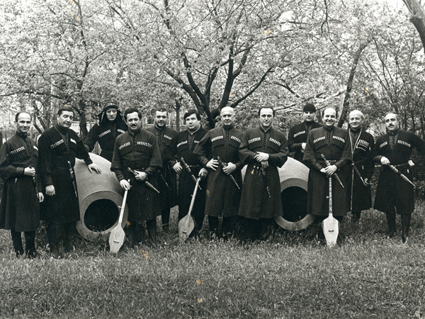

“ტრადიცია მხოლოდ იმას როდი ნიშნავს, რომ ერთი თაობა ბრმად და ერთგულად ბაძავდეს წინა თაობას. ტრადიცია, უპირველესყოვლისა, გულისხმობს ისტორიის შეგრძნებას, როცა წარსული არა მარტო წარსულად უნდა აღვიქვათ, არამედ თანამედროვეობადაც…”- უცნობი ავტორი .საქართველო უდიდესი ისტორიისა და კულტურის მატარებელი სახელმწიფოა და თუ განვავრცობთ ზემოთ მოყვანილ ფრაზას, სწორედ ის ქვეყანა სადაც ბოლომდე შეგიძლია შეიგრძნო მისი ისტორიის ხანგრძლივობა და მნიშვნელობა. ის უძველესი და უმდიდრესი ქვეყანაა, მრავალათასწლიანი ისტორიით, ტრადიციებითა და კულტურით, რაც ალბათ დამეთანხმებით რომ ძალიან მნიშვნელოვანი და საამაყოა. ყოველწლიურად უამრავი ტურისტი სტუმრობს მას, რათა ეზიაროს მის კულტურას და გაიგოს ახალი იმ ქვეყნის შესახებ, რომელიც მიუხედავად უდიდესი ისტორიული განსაცდელისა ათასწლეულების განმავლობაში, ის მაინც ინარჩუნებდა მის სისადავეს და მნიშვნელობას.
\ქართული ხალხური ცეკვა და მუსიკა, ეს ის უდიდესი სიმდიდრეა, რაც საქართველოს გამოარჩევს სხვა ქვეყნებისაგან თავისი ორიგინალურობით და კულტურით . მისი არსი ათასწლეულების სიღრმიდან მომდნარეობს. როდესაც განიხილავენ ქართული ცეკვის განსაკუთრებულობას და მის მნიშვნელობას, გამოყოფენ არტისტიზმის ერთ-ერთი უმნიშვნელოვანეს კომპონენტს – მამაკაცის პლასტიკასა და მიმიკას. ეს არის ცეკვა, რომელიც მთლიანად წარმოაჩენს ნამდვილ ქართულ ხასიათს და სულს. ხალხური ქორეოგრაფიის ისტორიული წინამორბედად მიიჩნევენ სამონადირეო ცეკვას, ნაყოფიერების ღმერთის, „შუშპა“-ს პატივსაცემად შესრულებული ფერხულს. ქართული ცეკვები ეს ის უდიდესი სიმდიდრეა რომელიც წლების განმავლობაში იხვეწებოდა და ვითარდებოდა და დღეს რითიც ჩვენს ქვეყანას მთელი მსოფლიო იცნობს.